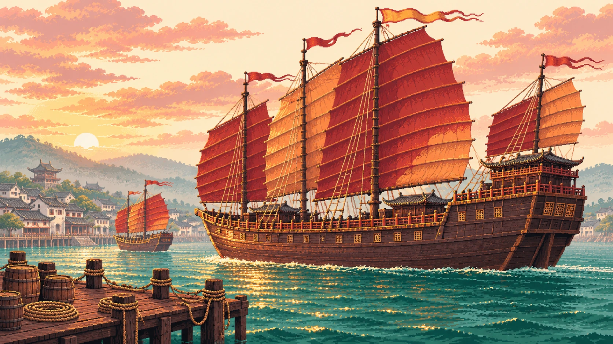
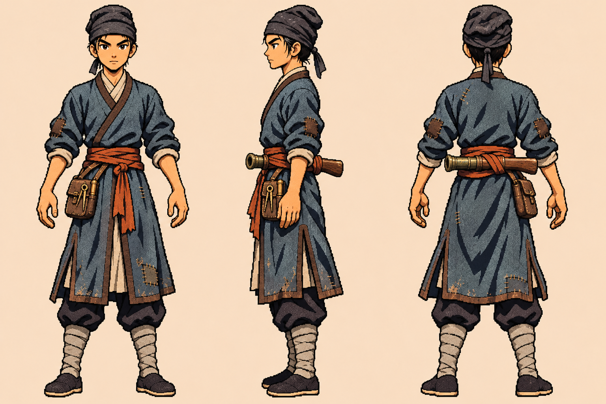

首位登场主角
沈月玲
男装化名 · 沈凌
初登船时十六岁。郑和教她识字、读海图与武艺。她想证明自己能带队，也想亲眼看看他口中的远方。
- 所属
- 郑和船队
- 所长
- 近战、机动、攀索
- 同行
- 林巳于马六甲入队
造型探索
收窄的鹅蛋脸、轻眉与稍低的肩线突出她的清秀气质，海青短衣、赤色头巾和左腰盘绳延续原设。

明初，郑和船队自刘家港启航。男装登船的沈月玲与隐姓埋名的林巳，在桅索、机械与陌生港口之间，寻找各自的方向。
初登船时十六岁。郑和教她识字、读海图与武艺。她想证明自己能带队，也想亲眼看看他口中的远方。
收窄的鹅蛋脸、轻眉与稍低的肩线突出她的清秀气质，海青短衣、赤色头巾和左腰盘绳延续原设。

以落魄书生身份在马六甲登场。他博学、稳定而冷静，因修械能力与临危判断获郑和接纳，也逐渐发现海外生活的吸引力。
灰蓝长衣保留书生的纵向轮廓，补丁与工具包说明漂泊和修械经历；腰后短火器将战斗职能藏在平静外表之后。

冷灰蓝建立书生的纵向轮廓，锈红束带切开衣身；皮褐同时承担工具包、火器木柄与衣缘，米白留给交领和绑腿。
8 种不透明色 · Alpha 仅 0 / 255
8× 预览逐像素比对通过，使用最近邻放大。
参考《合金弹头》用头、手与随身装备建立小角色身份的方法。月玲以较柔和的椭圆脸、低肩线、短衣和腰绳识别，林巳以更方的下颌、浓眉、长衣和腰侧工具包形成克制的轮廓。
两人共享深色外轮廓、成块明暗和锈红强调色，但装备和衣长各自独立。人物与服装均为本次原创探索。
参考图像 · SNK《合金弹头》周年站 ↗原生网格上重新安排发髻、红巾、斜襟与腰绳。麻绳的多股捻纹合为两圈，浅色绑腿隔开裤脚和布鞋。
衣褶只留影响体积的亮暗面。把角色放回 1×，仍能从红色束带与腰侧绳圈认出她。
下载月玲 8× 预览 ↧布帽与长衣先读成落魄书生，工具包和腰后火器才在第二眼显现。像素稿将补丁简化为肘部色块，工具缩成两道米白高光。
长衣下摆保留中缝与两块灰蓝受光面，即使装备被遮住，也能和月玲的短衣轮廓分开。
下载林巳 8× 预览 ↧明代郑和远航与刘家港集结为时代锚点。刘家港史料 ↗
据设计文档 v0.3 第 1、2、5、8 章，游戏将多次航行压缩至约 1405–1408 年。月玲受郑和养育、林巳隐姓入队均属故事设定。
文档未规定统一服制。月玲的红巾与盘绳、林巳的灰蓝长衣、工具包及短火器携带方式均为本轮概念方案。